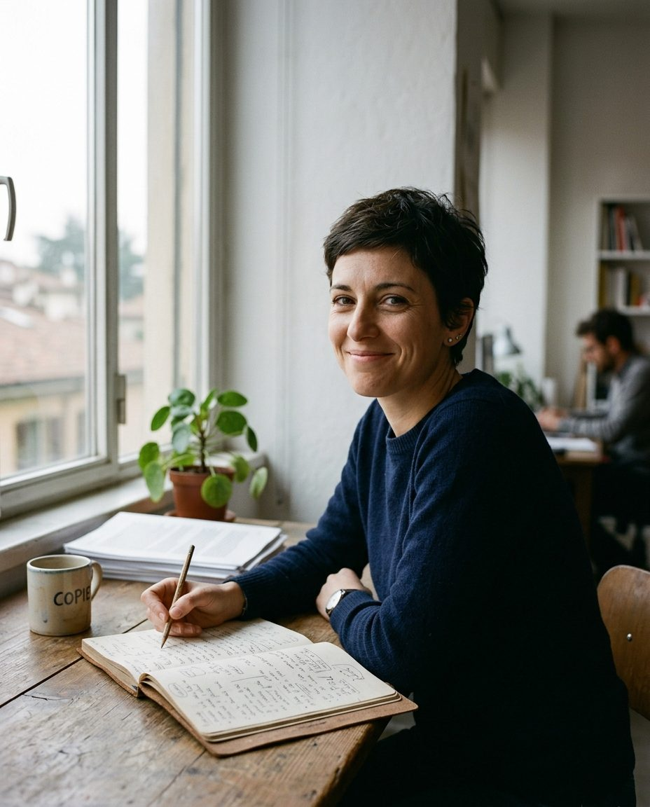

Socia. Scrive i testi e tiene i piani editoriali dei clienti.
In studio dal 2017, prima otto anni in un quotidiano di provincia. Ogni testo che passa da lei torna con la stessa domanda a margine: chi l’ha detto?